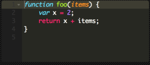
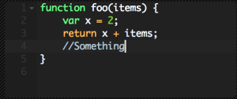

I've been using Microsoft Visual Studio (MSVS) on a Windows machine for the majority of my programming carrier. For my new job I use a Mac, which I was a little hesitant using at first to be honest. I have never been a fan of Apple products, but that is a discussion for another time. I am so used to using MSVS that I didn't know what to do with myself when I got to the Mac. What IDE should I use? There were a lot of suggestions at work: PhpStorm, IntelliJ, Brackets, all sorts of stuff. I kept hearing "just use VIM" over and over, but because I was so used to something a little more... robust, I couldn't go as far to just use VIM all the time (though I do find myself using vi for the majority of my quick edits, as well as Git stuff).
So I landed on Sublime Text 2. A pretty minimal editor, with options. There are so many plugins that make Sublime awesome. Here are a few of mine:PluginsPackage Control
This is the first plugin I installed. It is awesome! It lets you easily manage/install/remove all of your plugins inside of Sublime. After you install it, it couldn't be easier to use: just press command + shift + p. Type "install" and press enter - then just search for any plugin you want!
Sublime On Save Build
This simple plugin will trigger a build on each save. It is needed by some of the later plugins such as JSLint
JSLint
As a frontend developer, I would be in bad shape without this easy to use plugin. With the combination of Sublime On Save Build, every time you save it will run JSLint and present you with a little build window (dismiss with 'esc') that will tell you the JavaScript errors in your file.
Git
This plugin will let you run Git commands right from within Sublime - I actually don't use this one anymore because I got used to the command line. However, it was great, and I know some guys that use it. However, I do use GitGutter.
GitGutter
I like this plugin a lot. Shows changes on the left hand side (in the gutter). Yellow marks for edited lines, green marks for added line, and red marks for removed lines. Really useful.
Themes
Monokai
Sublime also comes with a few different themes, but there are SO many more. To look at some of the preloaded themes, go to Preferences->Color Scheme. You can also download other themes. Once of the better sites I have found found is Color Sublime. I also like devthemez.
Future Funk
I currently use Monokai, the default theme. However I switch between Monokai and Future Funk. There are so many themes to choose from. It is a nice touch that makes it feel a little more customizable.
So that's it! Sublime is a great editor, I use it on my Windows machine, my Mac, as well as my Linux machines. It works great, is very customizable, and is pretty lightweight. Make sure to checkout Sublime Text 3 (currently in beta).